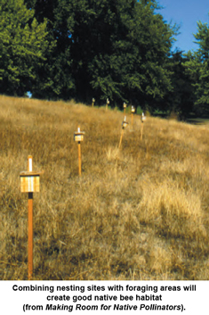
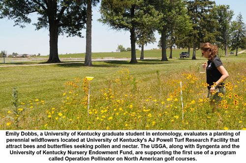
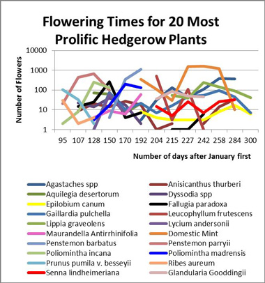
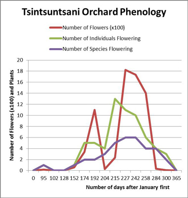

North American Pollinator Protection Campaign
NAPPC
NAPPC Partner Forum
The following are opinion pieces developed by partners of NAPPC
They are opinions expressed by the author. If you have any comments, please direct them to the NAPPC Forum Comments Form
Conservation of Native Pollinators on Golf Courses
by Dr. Mike Kenna
Golf courses contain large areas that remain out-of-play and often unmanaged, providing habitat for plants and insects. These areas can be valuable for restoring populations of wildlife that help pollinate the surrounding plant life. The United States Golf Association is providing education to course managers and golfers about native pollinators, including native bees, butterflies, and moths that have been on the decline in the last twenty years.
With help from the U.S. Department of Agriculture Bee Biology and Systematics Laboratory, the USGA funded a three-year project in 1997 with The Xerces Society to study the conservation of native pollinators, especially of bees, on golf courses. The published guidelines, Making Room for Native Pollinators: How to Create Habitat for Pollinator Insects on Golf Courses were prepared because of that project. The guidelines illustrate that simple changes to the environment of golf courses can have great benefits for wildlife. A flower-rich habitat for bees may also become home to hummingbirds, butterflies, beetles, or flower flies, and diverse habitats will attract other animals and birds. Some of the insects attracted, such as solitary-nesting wasp species, prey on cutworms that infest golf courses.
These golf course habitat areas for plants and insects also offer educational possibilities, not just for the golfers but also for local schools and communities who can learn about practical conservation techniques and witness first-hand their benefits. Conservation of native bees and plants is a valuable way in which golf courses can contribute to a healthier environment, and is a simple task to integrate into the management of a course.
Recently, the USGA, along with Syngenta and the University of Kentucky Nursery Endowment Fund, are supporting the first use of a program called Operation Pollinator on North American golf courses. "Bees are really critical for food supply," said Daniel Potter, professor of entomology at the University of Kentucky (UK). Hence, there is an urgent need to cultivate spaces that are friendly to bees and butterflies. Emily Dobbs, a UK graduate student in entomology, began the project in 2011 to produce mixes of wildflowers that would attract bees and butterflies. Then, she planted them on six Lexington golf courses.
"You can't just go out in a field and start throwing seeds around," Potter said. The plots are 20 feet by 200 feet for each of the golf courses. Of the three seed mixes developed, Dobbs said one is for butterflies, two are for bees, and one is a fallow plot that serves as a control. Consisting of perennial plants, the seed mix is designed to provide visual interest for all seasons. "There's an opportunity to create a sanctuary here," Dobbs explained. She is using different techniques to measure success, including the number of blooms, "bee bowl" trapping in bright plastic bowls with soapy water, and butterfly nets.
Initiated by the Syngenta Company, Operation Pollinator projects began in Great Britain. The idea is to provide scattered plantings for bees and butterflies to gather pollen and nectar. For North America, "The possibilities for other pollinator gardens are nearly endless — on horse farms, school grounds, private homes, and even neighborhood parkland," Dobbs said. For now, Potter suggested, "The golf course can become an urban sanctuary."
Learn more about The USGA’s Environmental Commitment
Additional Information
- Truman, Cheryl. "UK Student Plants Golf Course Gardens to Increase Bee, Butterfly Populations." Kentucky.com (30 Apr. 2013): n. pag. The Lexington Herald-Leader. Web. 09 May 2013.
- Shepherd, Matthew. 2002. Making Room for Native Pollinators: How to Create Habitat for Pollinator Insects on Golf Courses. Far Hill, New Jersey: United States Golf Association; and Portland, Oregon: Xerces Society. 30 pp.
- Shepherd, Matthew; Vaughan, Mace; Black, Scott Hoffman. 2006. MAKING MORE ROOM A Companion to Making Room for Native Pollinators: Oregon’s Butterflies, Local Plants, and Extra Resources. Portland, Oregon: The Xerces Society for Invertebrate Conservation. 48 pp.
When You Plant Flowers This Spring, Think Pollinator Forages, Phenologies and Partnerships
More than ever before, Americans are looking at their planting of flowers on their land in their gardens in a broader context, one that includes colors and fragrance, but extends beyond our own perception of those attractions to how pollinators themselves perceive them. The reason for this paradigm shift is obvious to anyone who has been reading the news of hearing it on radio and TV: the numbers of monarch butterflies, bumblebees and honey bees this last year have been lower than at any time during our own lifespans. Some migratory pollinators such as monarchs and hummingbirds have also arrived in the United States only to find that their arrival times are mismatched with the onset of flowering of their favored nectar resources. These mismatches pose risks to the nutritional health of the floral-visiting migrants, but they warn us that climate change may be disrupting long-term partnerships between native plants and their most allegiant pollinators.
Given the fact that climate uncertainty and other stresses are affecting North America’s fleet of pollinators at unprecedented levels, it’s a good time for gardeners and habitat restorationists to lend a hand in getting a greater diversity of “forage plants” and “larval host plants” back into the gardens, woods and neighborhood open spaces around our homes. But to be effective in keeping pollinators in place, these plantings need to both attract and sustain pollinators over many weeks, not just short spurts. Pollination ecologist Rachel Winfree has warned that most plantings for pollinators in human-managed spaces only attract the “background fauna” of the most common pollinators for a short while, and hardly change the diversity of these beneficial insects present over the long haul. Many well-intentioned plantings of pollinator gardens are simply too small to offer much of an attraction. They seldom have a long enough sequence of flowering peaks of different wildflower species to sustain a wide diversity of pollinators.
So how can we solve this dilemma to truly offer a helping hand through providing sufficient nectar resources to pollinators just when we need to foster dramatic levels of recovery among our the most emblematic species?
One key concept to understand and embrace in the design of pollinator plantings is that of “sequential mutualisms.” This concept suggests that we should plant a set of wildflowers that bloom at different times over the season in a way that leaves little or no gaps in the availability of nectar resources suited to particular pollinators. We need to match the timing of these flowerings, as well as the form and colors of flowers to the needs and foraging capabilities of each kind of pollinator we wish to attract. For monarchs, of course, we also need to include a variety of milkweeds that can provide sturdy stems for egg-laying and lush levels for caterpillar foraging on these larval host plants.
In southern Arizona where work with Borderlands Restoration in the design and planting of both on-farm hedgerows and restoration plants, the ideal pattern of ebbs and flows of flowering to attract and sustain hummingbirds in our area may look something like this:

Now compare the duration of nectar availability in the above graph with that available in a recently-planted but still immature hedgerow:

The second graph shows that plantings have already increased the availability of nectar resources during mid-summer but have not yet had much effect on promoting more flowering during the spring drought period in southern Arizona when nectar availability may be extremely limited, which may become more of a problem with intensified climate change. During this period, fewer kinds of native wildflowers are in bloom, but many of them now bloom for shorter periods of time. This leaves “phenological gaps” in flowering times just when hummingbirds, monarchs, bats and white-winged doves return to southern Arizona in large numbers.
Three springs ago, a Rufous hummingbird arrived in a wolfberry bush in my orchard, weighing half of what it might have normally weighed in a year of abundant spring rains and ample flowering along its migratory corridor. It died in my hand, perhaps because of the lack of floral resources over the six hundred miles of its migratory corridor immediately south of my home, for plants along that corridor had been killed or damaged by both drought and catastrophic freezes. This heart-breaking incident brought home to me why our planting of a diversified mix of flowers forming sequential mutualisms with particular pollinators is so important. And of course, the provision of water in pools and seeps is especially important to pollinators during seasons or years of extended drought.
This humble parable is simply one more way to remind us that what we plant for all kinds of pollinators now matters, more than ever before. So this spring, from the April fourteenth Day of Action and Contemplation for imperiled pollinators to National Pollinator Week, June 16-22, thousands of citizen scientists are planting milkweeds and other native wildflowers in schoolyards, on college campuses, and around churches, synagogues, and mosques. Please join their ranks and show your commitment to making way for monarchs and other imperiled pollinators through tangible actions.
top